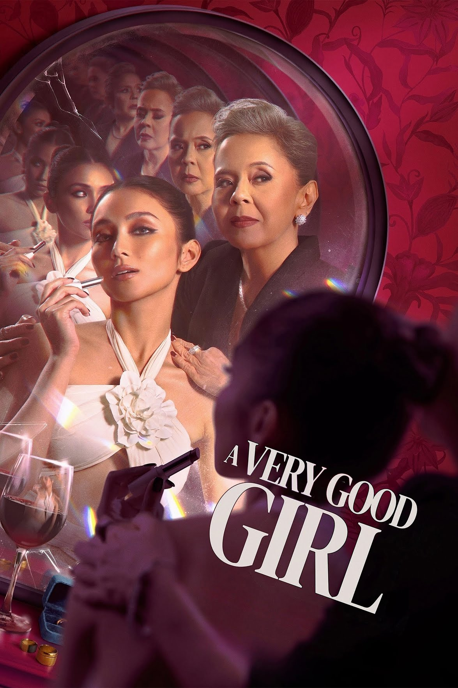
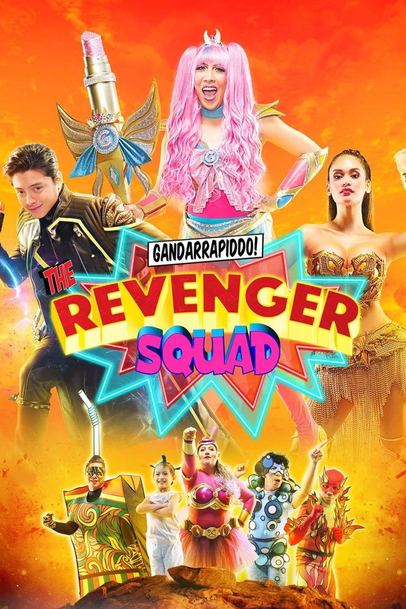
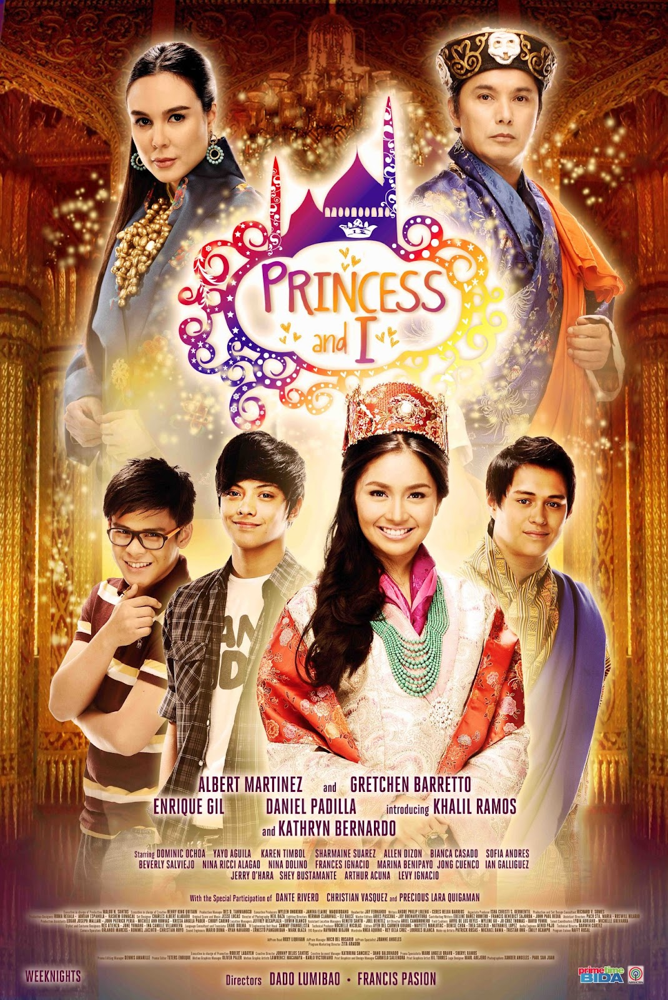
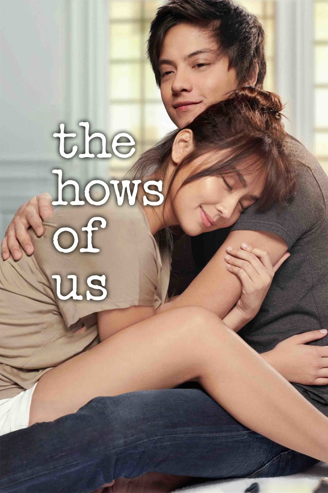
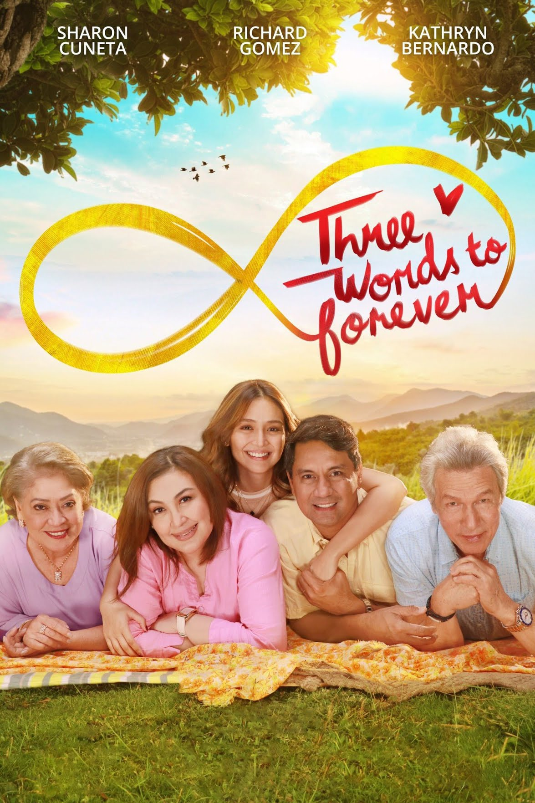

KATHRYN BERNARDO'S SHOWS
- 
-

- 
- 
-

- 
- 
Kathryn Chandria Manuel Bernardo (born March 26, 1996) is a Filipino actress. She began her career as a child actress, portraying young versions of lead characters in series such as It Might Be You (2003) and Endless Love (2010). She gained prominence in the 2010 remake of Mara Clara and has since established herself as one of the most popular and successful actors of the 21st century in the Philippines.
Bernardo was the highest-grossing Filipino movie actress of the 2010s, with her movies earning over ₱3.5 billion at the box office. She has been recognized by People Asia as the "Box Office Queen of her generation," being the only Filipino actress with two films that grossed over ₱800 million each. Additionally, she was listed by Forbes Asia as one of the most influential celebrities in the Asia-Pacific region on social media.
She is best known for her roles in popular television series including Mara Clara (2010–2011), Princess and I (2012–2013), Got to Believe (2013–2014), Pangako Sa 'Yo (2015–2016), La Luna Sangre (2017–2018), and 2 Good 2 Be True (2022). Her notable films include She's Dating the Gangster (2014), Crazy Beautiful You (2015), Barcelona: A Love Untold (2016), Can't Help Falling in Love (2017), The Hows of Us (2018), and Hello, Love, Goodbye (2019), the latter two being among the highest-grossing Filipino films of all time.
Bernardo was born on March 26, 1996, in Cabanatuan, Nueva Ecija, Philippines. She is the youngest of four siblings and was raised by her parents, Luzviminda and Teodore Bernardo.
Initially, Bernardo was raised as a member of Iglesia ni Cristo.However, it is believed that she converted to the Born Again Christian faith
Before her acting debut in 2003, Bernardo attended Flowerlane Montessori Children's House and later OB Montessori Center in Quezon City. Due to her busy schedule, she joined Angelicum College's homeschooling program in 2011. While pursuing a marketing degree at Enderun Colleges, she had to pause her studies because of scheduling conflicts with her television series Got to Believe. As of 2021, she expressed her desire to earn a college degree in marketing or communication arts.
Bernardo began acting in 2003, appearing as the young Cielo on ABS-CBN's It Might Be You. In 2006, she had her first main role in the TV series Super Inggo, playing Maya, the love interest of the main character. She then appeared in various ABS-CBN shows, including Krystala and Vietnam Rose, before joining the kiddie show Goin' Bulilit.
As a child actress, Bernardo played the roles of young Victoria in ABS-CBN's Magkaribal and young Jenny in GMA's Endless Love, both of which premiered on June 28, 2010.
Her breakthrough role came in the remake of the 1992 drama Mara Clara, where she played Mara David. The series was a smashing hit and solidified her reputation as an actress on the rise.
Following Mara Clara, Bernardo starred in the teen show Growing Up, where she played Ella, a 15-year-old girl living with her single mother.
Bernardo's film career started in 2004 with Gagamboy, but she gained prominence in 2011 with the movie Way Back Home, which she starred alongside Mara Clara co-star Julia Montes.[24][25] That same year, she joined the cast of the horror film Shake, Rattle & Roll 13, receiving positive reviews for her performance.
After the success of Mara Clara, Bernardo further rose to prominence in the top-rating primetime series Princess and I. Starring alongside Growing Up co-star Daniel Padilla and Enrique Gil, Bernardo played the titular role of Mikay/Princess Areeyah. The series was notable for being the first Philippine show filmed in Bhutan, earning acclaim for its grand production. Later that year, Bernardo and Padilla joined the ensemble cast of the romantic-comedy film 24/7 in Love and in the 2012 Metro Manila Film Festival entry Sisterakas alongside Vice Ganda.
Dubbed as KathNiel, their first starring film as a tandem was in the coming-of-age romantic comedy film Must Be... Love, which was released in March 2013. In August of that year, they paired up in the television series Got to Believe, which sustained high ratings in its entire run. In December, they starred in the 2013 Metro Manila Film Festival entry Pagpag. Their collaboration continued with the successful film adaptation of She's Dating the Gangster in July 2014, which was one of the highest-grossing films of the year. By December, Bernardo and Padilla received stars on the Eastwood Walk of Fame in Quezon City, a recognition of their contributions to Philippine entertainment.
Over the years, Bernardo and Padilla collaborated on several successful films and television series. They teamed up in the 2015 film Crazy Beautiful You, followed by the 2016 film Barcelona: A Love Untold, which became the second highest-grossing film of that year. Bernardo was awarded her first Box Office Queen title for Barcelona: A Love Untold at the 2017 Box Office Entertainment Awards. Their partnership continued in 2017 with Can't Help Falling in Love. All of these films achieved significant box office success.
On television, they starred together in the 2015 remake of Pangako Sa 'Yo. They continued their partnership on the small screen in the fantasy series La Luna Sangre in 2017.
In 2018, Bernardo made history as the first Filipina actress to reach the ₱800 million mark in the box office with her film The Hows of Us alongside Padilla. For her performance, she won her first Best Actress award at the 35th PMPC Star Awards for Movies and later at the 2019 Entertainment Editors' Choice Awards for Movies (EDDYs). The following year, she achieved this box office milestone once again with Hello, Love, Goodbye, this time alongside GMA actor Alden Richards. This film became the highest-grossing Filipino film of all time, a record it hold for more than four years (2019-2024), grossing over ₱880 million worldwide and breaking box office records both in the Philippines and abroad. Bernardo received back-to-back Phenomenal Box Office Star awards for The Hows of Us with Padilla and for Hello, Love, Goodbye with Richards, at the Box Office Entertainment Awards in 2019 and 2020. She also won Film Actress of the Year for the latter in 2020.
In 2022, Bernardo reunited with Padilla in the television series 2 Good 2 Be True, marking their final project together before their eventual break-up in 2023.[51] She was hailed as the Outstanding Asian Star at the 18th Seoul International Drama Awards.
In 2023, Bernardo starred in A Very Good Girl which is her first solo film in several years, alongside acclaimed actress Dolly de Leon. Her performance earned her the first FAMAS Best Actress award of her career. She also regained the title of Box Office Queen for the second time at the 2024 Box Office Entertainment Awards. She also won the national winner for Best Actress in a Leading Role in the 2024 Asian Academy Creative Awards.
Bernardo reunited with Richards after five years in the film Hello, Love, Again, the sequel of their 2019 hit movie Hello, Love, Goodbye.
In 2018, Bernardo confirmed her long-term relationship with actor Daniel Padilla, which began on May 25, 2012. On November 30, 2023, the pair announced the end of their relationship.
In April 2024, she celebrated a house blessing and housewarming party for her new home in Antipolo, which features modern architecture and various artistic elements.
In 2017, Bernardo launched her nail salon business, KathNails by KCMB, which has eight branches across the Philippines. In 2022, she opened another nail salon, The Glow Up Lounge, which has five branches nationwide.
She co-founded a boutique hotel, Isla Amara, in El Nido, Palawan, alongside actor Piolo Pascual and other partners.
While earning a degree in Spain, a young architecture student dealing with grief meets a fellow expatriate trying to escape her past.
Gab becomes engaged to her long-time boyfriend Jason and discovers that she is already married, but to a total strangerbr, the happy-go-lucky Dos.
Troubled 19-year-old Jackie is sent on a medical mission in hopes of calming her wild-child antics, and finds herself falling for handsome politician's son Kiko.
Crazy Beautiful YouThree friends try to attain and protect what is most precious to them. Family is the only thing that binds them, but as they stick to their separate missions, dark secrets arise and threaten to destroy everything they hold dear..
Gandarrapiddo: The Revenger SquadGot to Believe is a Philippine television drama romantic series broadcast by ABS-CBN. Directed by Cathy Garcia-Molina, it stars Kathryn Bernardo and Daniel Padilla.
Got to BelieveA bartender and a domestic helper of Filipino origin living in Hong Kong find themselves falling in love, but they each have different plans for their future.
Hello Love GoodbyeMalia, who lives with her parents, is destined to kill a powerful vampire and undergoes rigorous training for it. Things change when she meets a man who is searching for his father's killer.
La Luna SangreMara Clara is a Philippine television drama series broadcast by ABS-CBN. The series is a remake of the 1992 Philippine television series of the same title. Directed by Jerome C. Pobocan and Claudio "Tots" Sanchez-Mariscal IV, it stars Kathryn Bernardo and Julia Montes.
Mara ClaraA young woman (Kathryn Bernardo) develops romantic feelings for her best friend (Daniel Padilla), but problems arise when another gal enters the picture.
Must be LoveAmor and Eduardo are madly in love with each other. Unfortunately, Eduardo's mother disapproves of their relationship. She wants Eduardo to marry another woman.
Pangako SayoPrincess and I is a Philippine television drama series broadcast by ABS-CBN. Directed by Dado C. Lumibao, Francis X. Pasion and Rory B. Quintos, it stars Kathryn Bernardo, Daniel Padilla, Enrique Gil and Khalil Ramos.
Princess And I
Seventeen-year-old Athena Dizon unwittingly plays a trick on resident heartthrob and bad boy Kenji de los Reyes. All of a sudden, she finds herself pretending to be his girlfriend to make an ex jealous; however, she falls in love with him.
She's Dating the GangsterA couple decides to make their engagement official by honouring tradition when a pandemic forces them and their families to quarantine under one roof.
The Hows of Arrest UsA young couple dream of growing old together as they deal with the struggles of being in a long-term relationship.
The Hows Of UsA married couple keep up a pretence of happiness as their family arrange a big 25th anniversary celebration, but they're secretly planning to separate
Three Words to ForeverVengeful virtual assistant Mercy takes on the persona of Philo to insert herself in the glamorous life of business tycoon Mother Molly after being unjustly fired five years ago. Philo slowly destroys people around Mother Molly, making the older woman dependent on her, but as her revenge plan becomes more dangerous, Philo gets to know who Mother Molly really is.
A Very Good GirlJessica and Joanna, two sisters who were separated as toddlers, meet again during a swimming contest, re-igniting old jealousies between the two after their twelve years apart have transformed them into different people.
Way Back HomeAfter fighting for their love to conquer the time, distance and a global shutdown that kept them apart, Joy and Ethan meet again in Canada.
Hello Love AgainPlease follow me on my social media accounts:
click this icon to see my FACEBOOK --->
click this icon to see my INSTAGRAM --->
CREATIVE WEB DESIGN 2024